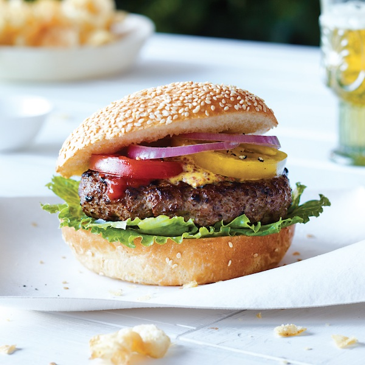

The Perfect Burger

Description
Make burgers your way and have them come out flawless every time with what I consider to be the Best Hamburger Patty recipe, in my humble opinion.
It’s a classic all-American recipe for mouthwatering burgers that can be cooked on the grill, on the stovetop, as thick 1/3 pound patties, or as ultra-thin griddle patties.
Ingredients
- 2 lbs ground beef
- 1 red onion, sliced
- 1 slice sharp cheddar cheese
- 1 pickle, sliced
- 1 sesame seed bun
- 1 teaspoon salt
- 1 teaspoon black pepper
- 1 teaspoon garlic powder
Steps
- Pre-heat the grill to 400 degrees F
- Form the patties into 3 equal-sized discs
- Push into the middle of each patty with thumb
- Season generously with salt, pepper, and garlic powder
- Grill for about 3 minutes per side, or until temperature reaches 145 degrees
- Serve on toasted sesame bun with desired vegetables and enjoy!